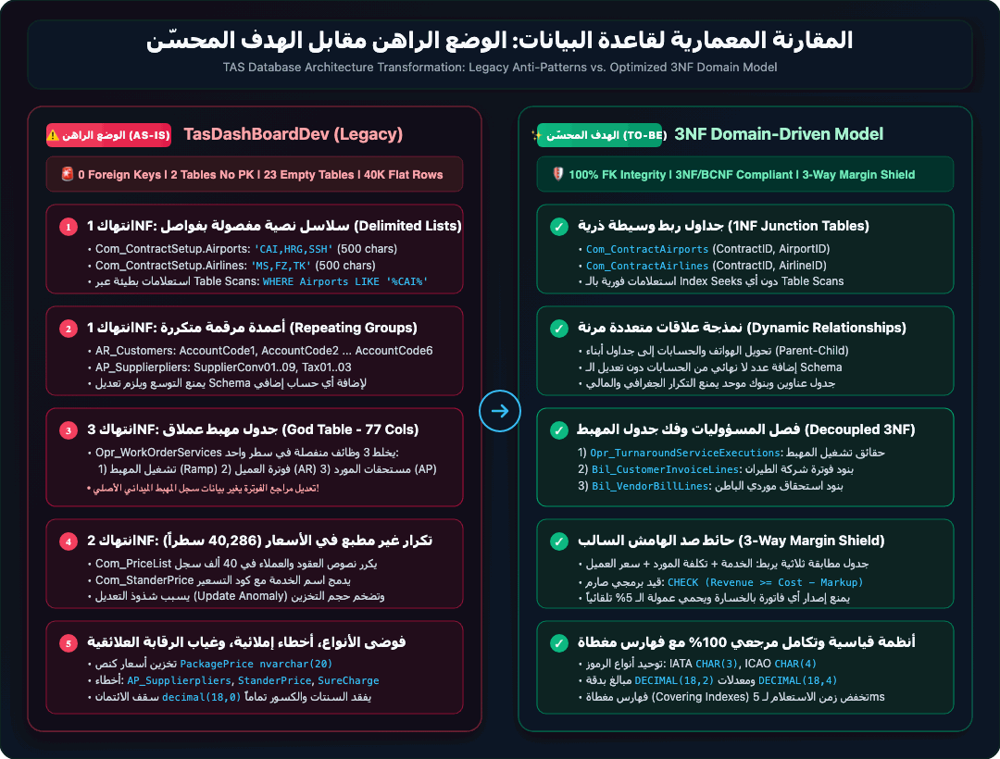
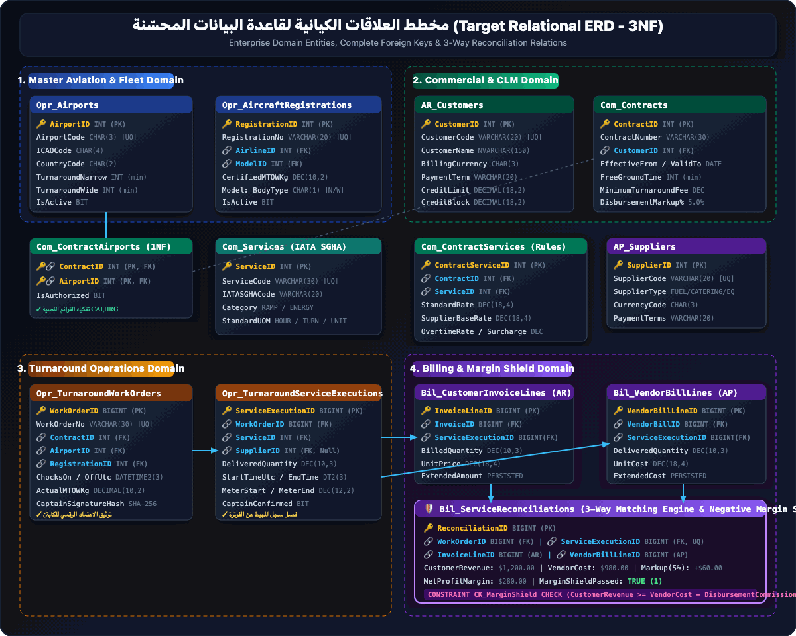
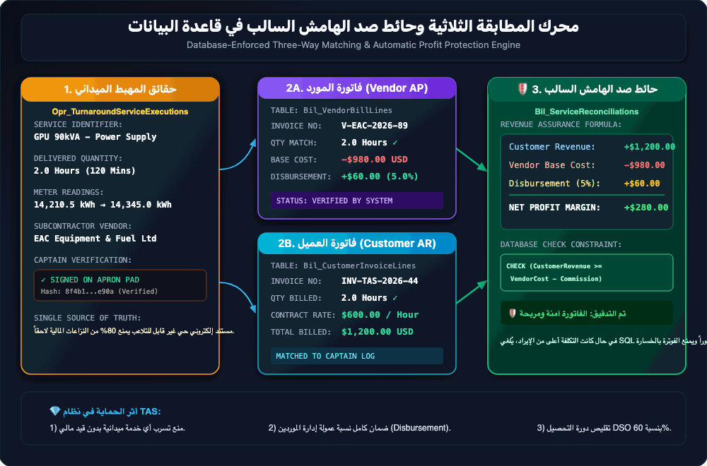

🚨 تقييم المخاطر المعمارية والتشغيلية (Critical Risk)
غياب المفاتيح الأجنبية تماماً (0 Foreign Keys) في قاعدة بيانات تضم 117 جدولاً يمثل ثغرة نزاهة حرجة. هذا يسمح بحذف سجلات شركات الطيران أو الخدمات بينما تبقى فواتيرها وعقودها معلقة كبيانات يتيمة (Orphaned Records)، مما يهدد دقة المحاسبة المالية ويمنع محرك الاستعلامات من تحسين خطط التنفيذ (Execution Plans).

مقارنة التحول المعماري (Architectural Paradigm Shift)
| المعيار المعماري | الوضع الراهن (As-Is Legacy) | النموذج العلائقي المحسّن (To-Be Normalized 3NF) |
|---|---|---|
| هيكل الجداول | جداول عملاقة (77 عموداً) تخلط بين العقد والطلب والفوترة | فصل النطاقات (Domain-Driven): عقود، أوامر تشغيل، تسعير، فوترة |
| التكامل المرجعي | 0 مفاتيح أجنبية (Zero Foreign Keys) | شبكة تكامل مرجعي صارمة بـ 15+ قيد FK و ON DELETE RESTRICT |
| تخزين القوائم | قوائم نصوص مفصولة بفواصل (مثل 1,2,5,7) تخرق 1NF |
جداول تقاطع علائقية متوافقة مع الشكل الطبيعي الأول (1NF) |
| حسابات الهامش | معادلات فورمولا مدمجة بنصوص غير محققة | محرك مطابقة ثلاثية (3-Way Matching) وحائط صد فوري للهامش السالب |

النطاقات الوظيفية المستهدفة (Domain-Driven Architecture)
تم تقسيم قاعدة البيانات إلى 4 نطاقات وظيفية معزولة ومترابطة عبر معرفات صلبة (Surrogate & Natural Keys):
- نطاق العقود والاتفاقيات (Contract Domain): جداول
Contracts,ContractServices,PriceLists. - نطاق أوامر التشغيل والمهبط (Work Order & Ramp Domain): جداول
WorkOrders,WorkOrderServices,RampEvents. - نطاق التسعير واحتساب التكاليف (Pricing & Cost Domain): جداول
ServiceCostAllocations,SLA_Policies. - نطاق الفوترة والتحصيل (Billing & Invoicing Domain): جداول
Invoices,InvoiceLines,MarginAudits.

آلية عمل حائط صد الهامش السالب (Automated Profit Protection)
يقوم المحرك بمقارنة لحظية بين 3 مصادر للبيانات قبل اعتماد أي فاتورة:
- المطابقة الأولى: التحقق من مطابقة الخدمات الميدانية المنفذة على الطائرة مع شروط وبنود العقد النشط.
- المطابقة الثانية: احتساب التكلفة التشغيلية المباشرة (العمالة والمعدات ومقاولي الباطن) مقابل السعر المفوتر.
- حائط الصد: إذا كان هامش الربح المحتسب أقل من الحد الأدنى المعتمد (مثلاً < 15%)، يتم تعليق الفاتورة تلقائياً وتوليد إشعار فوري لمدير العمليات والفوترة.
نصوص الإنشاء البرمجية لقاعدة البيانات المحسّنة (Production SQL DDL)
نصوص جاهزة للتطبيق على خادم Microsoft SQL Server مع المفاتيح الأساسية والأجنبية وقيود الفهرسة:
-- 1. نطاق العقود والاتفاقيات
CREATE TABLE dbo.Dim_Airlines (
AirlineID INT IDENTITY(1,1) CONSTRAINT PK_Dim_Airlines PRIMARY KEY CLUSTERED,
IATA_Code CHAR(2) NOT NULL,
ICAO_Code CHAR(3) NOT NULL,
AirlineName NVARCHAR(150) NOT NULL,
BillingCurrencyCode CHAR(3) NOT NULL DEFAULT 'USD',
IsActive BIT NOT NULL DEFAULT 1,
CreatedAt DATETIME2(3) NOT NULL DEFAULT SYSUTCDATETIME()
);
-- 2. نطاق أوامر التشغيل
CREATE TABLE dbo.Fact_WorkOrders (
WorkOrderID BIGINT IDENTITY(1,1) CONSTRAINT PK_Fact_WorkOrders PRIMARY KEY CLUSTERED,
WorkOrderNumber VARCHAR(30) NOT NULL,
AirlineID INT NOT NULL CONSTRAINT FK_WorkOrders_Airline FOREIGN KEY REFERENCES dbo.Dim_Airlines(AirlineID),
FlightNumber VARCHAR(10) NOT NULL,
AircraftRegistration VARCHAR(15) NOT NULL,
AircraftTypeID INT NOT NULL,
FlightType CHAR(1) NOT NULL CONSTRAINT CK_WorkOrders_FlightType CHECK (FlightType IN ('P', 'C', 'V', 'M')),
ScheduledTime DATETIME2(3) NOT NULL,
ActualTurnaroundStart DATETIME2(3) NULL,
ActualTurnaroundEnd DATETIME2(3) NULL,
OrderStatusID TINYINT NOT NULL DEFAULT 1
);
-- 3. نطاق خدمات أوامر التشغيل (مطبّع 3NF)
CREATE TABLE dbo.Fact_WorkOrderServices (
WorkOrderServiceID BIGINT IDENTITY(1,1) CONSTRAINT PK_Fact_WOServices PRIMARY KEY CLUSTERED,
WorkOrderID BIGINT NOT NULL CONSTRAINT FK_WOServices_WorkOrder FOREIGN KEY REFERENCES dbo.Fact_WorkOrders(WorkOrderID),
ServiceID INT NOT NULL,
Quantity DECIMAL(8,2) NOT NULL DEFAULT 1.00,
UnitPrice DECIMAL(12,4) NOT NULL,
TotalPrice AS (Quantity * UnitPrice) PERSISTED,
CostAllocationRate DECIMAL(12,4) NOT NULL DEFAULT 0.00,
CalculatedMargin AS ((Quantity * UnitPrice) - (Quantity * CostAllocationRate)) PERSISTED,
IsMarginShieldApproved BIT NOT NULL DEFAULT 0
);
خريطة طريق الترحيل الآمن للبيانات دون توقف (Zero-Downtime Migration)
| المرحلة | النشاط الفني | الأثر التشغيلي |
|---|---|---|
| المرحلة 1: التدقيق والتطهير | تطهير النصوص المفصولة بفواصل، واستخراج السجلات اليتيمة (Orphans). | 0% توقف (Zero Impact) |
| المرحلة 2: النشر المتوازي (Shadow Schema) | إنشاء الجداول المطبّعة وتفعيل الكتابة المزدوجة عبر Triggers/CDC. | 0% توقف، استمرار النظام القديم |
| المرحلة 3: التحقق والتطابق | مطابقة فواتير شهرين كاملين بين النموذجين القديم والجديد. | التحقق المالي الشامل بنسبة 100% |
| المرحلة 4: التبديل النهائي (Cutover) | إعادة توجيه اتصالات التطبيق إلى الجداول والـ Views الجديدة. | نافذة تبديل دقيقة واحدة فقط (< 60 ثانية) |